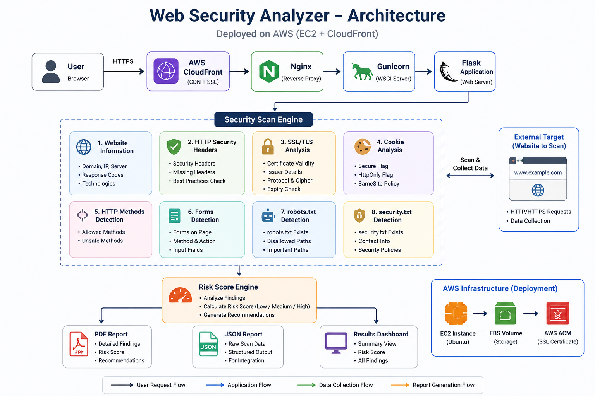
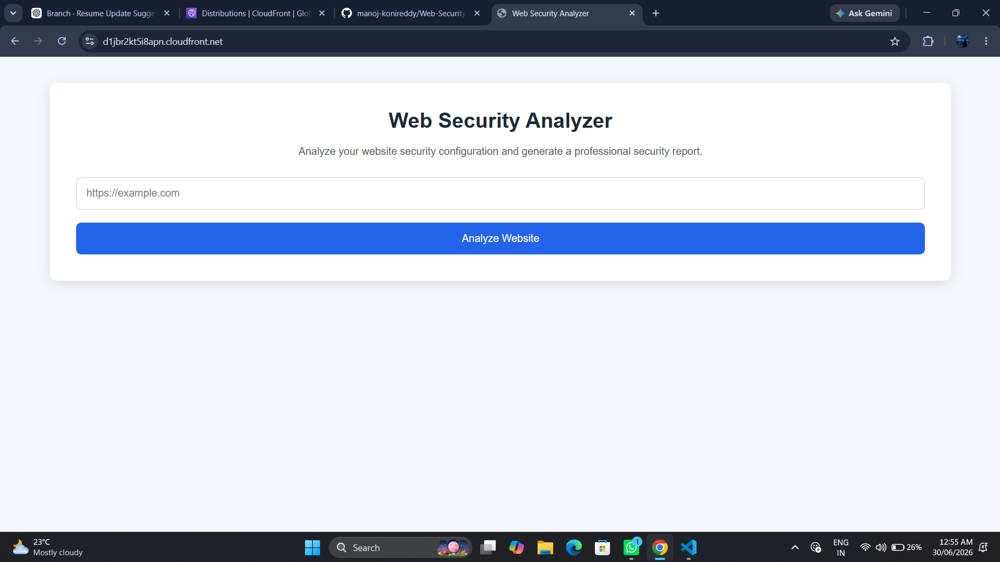
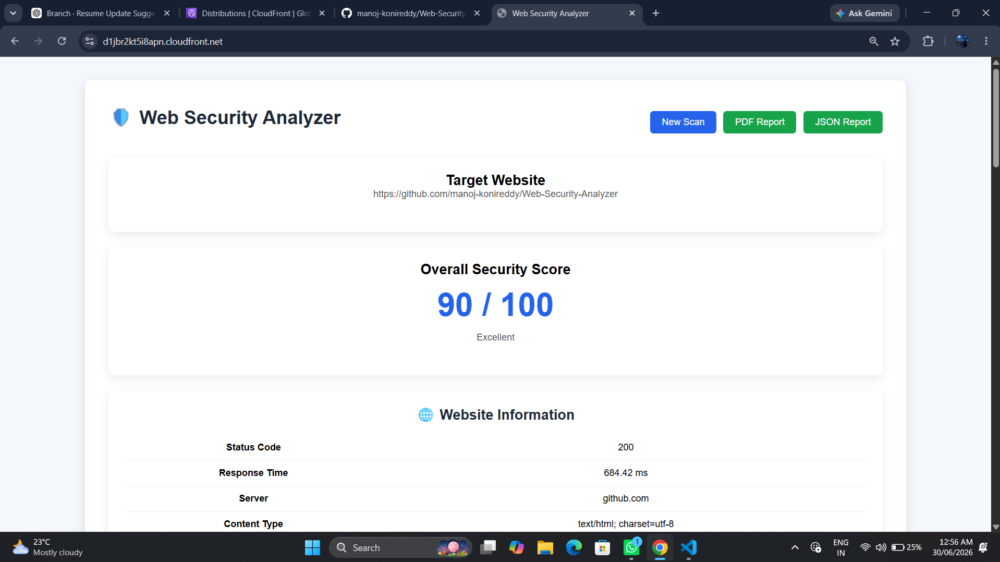
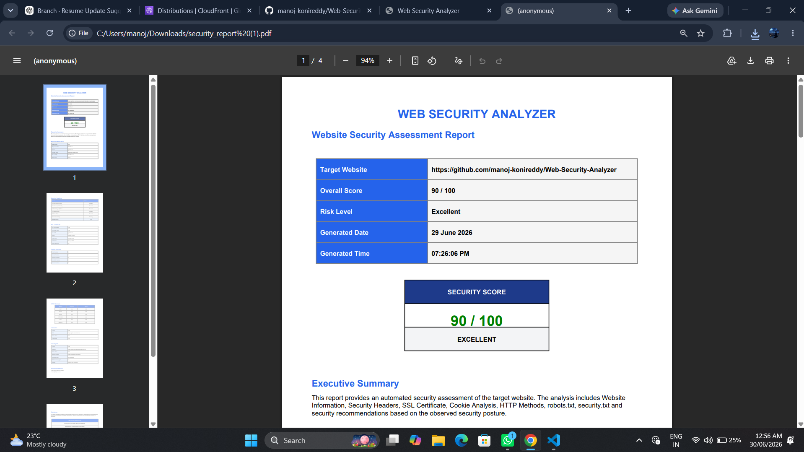
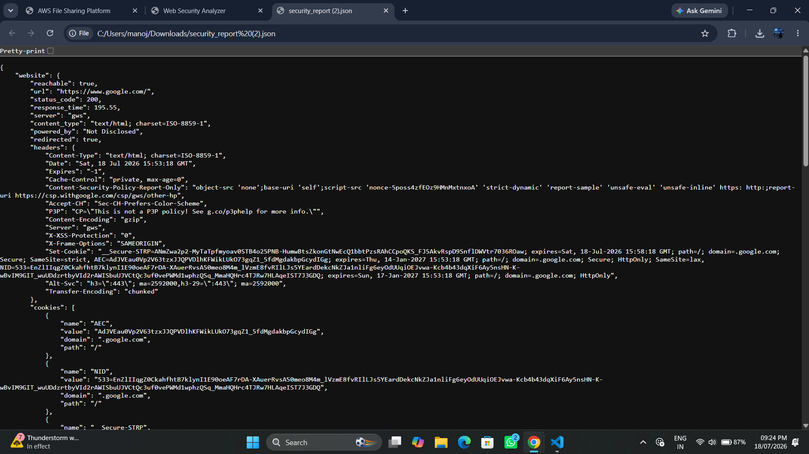

Python • Flask • AWS EC2 • CloudFront • Nginx • Gunicorn
A production-ready website security assessment platform that performs automated security analysis of websites by inspecting HTTP security headers, SSL/TLS certificates, cookies, HTTP methods, forms, robots.txt, and security.txt. The application generates comprehensive security reports with risk scoring and actionable recommendations while being securely deployed on AWS.
Performs automated security assessments by analyzing multiple security configurations of websites.
Validates SSL certificates, HTTP security headers, cookies, and supported HTTP methods.
Generates downloadable PDF and JSON reports containing security findings and recommendations.
Securely deployed on AWS using EC2, CloudFront, Nginx, and Gunicorn.
Many websites unintentionally expose security weaknesses such as missing HTTP security headers, weak SSL configurations, insecure cookies, enabled HTTP methods, or absent security policies. Identifying these issues manually requires significant time and technical expertise.
The Web Security Analyzer automates the security assessment process by performing multiple website security checks and presenting the findings through an intuitive dashboard with risk scoring and downloadable security reports.
Developers, security engineers, students, and website owners can use the application to quickly evaluate website security posture, identify misconfigurations, and follow recommendations to strengthen their web applications.

The application is deployed on AWS using Amazon CloudFront, Amazon EC2, Nginx, Gunicorn, and Flask. User requests are securely routed to the backend where multiple security modules inspect the target website. Results are processed by the security engine, an overall risk score is calculated, and comprehensive PDF and JSON reports are generated for download.
Collects server information, response time, content type, and general website metadata.
Checks important security headers including HSTS, CSP, X-Frame-Options, Content-Type Options and more.
Validates SSL certificates, expiration, issuer, encryption protocol and certificate security.
Analyzes Secure, HttpOnly and SameSite cookie attributes to identify insecure cookies.
Detects enabled HTTP methods and identifies potentially risky methods exposed by the server.
Scans webpages for HTML forms that may collect sensitive information.
Checks whether robots.txt exists and verifies its accessibility.
Verifies implementation of security.txt to help responsible vulnerability disclosure.
Calculates an overall website security score and provides recommendations for improving security posture.
User submits the target website URL for analysis.
Flask validates the URL and initializes the security scan.
Multiple security modules inspect headers, SSL, cookies, HTTP methods, forms, robots.txt and security.txt.
The security engine calculates an overall security score and risk level.
Interactive dashboard along with PDF and JSON reports are generated.

Responsive landing page allowing users to submit a website URL for automated security assessment.

Comprehensive security dashboard displaying website information, risk score, security findings and recommendations.

Generates a professional multi-page PDF report summarizing website security posture, overall score, detailed findings, and actionable recommendations.

Exports all security scan results in structured JSON format, making it suitable for further automation, integration, or external analysis.
Different websites respond differently to automated requests. The application was designed to gracefully handle redirects, timeouts, unavailable resources, and varying server configurations.
Implemented secure SSL certificate inspection while supporting a wide range of HTTPS configurations and certificate authorities.
Configured Flask with Gunicorn behind Nginx on Amazon EC2 and distributed the application globally using Amazon CloudFront.
Successfully analyzes publicly accessible websites and identifies common security weaknesses.
Calculates security scores and prioritizes vulnerabilities based on observed security posture.
Generates downloadable PDF and JSON reports for documentation and future analysis.
Production deployment using AWS EC2 and CloudFront providing secure and reliable access.